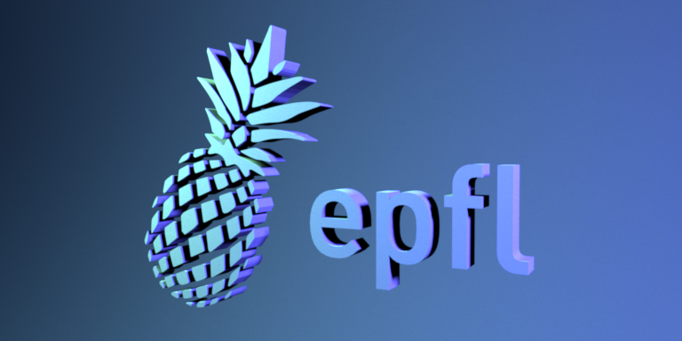
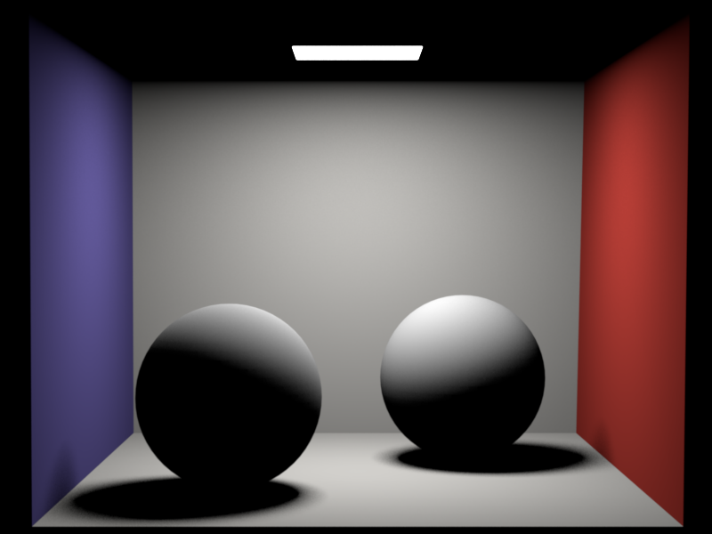
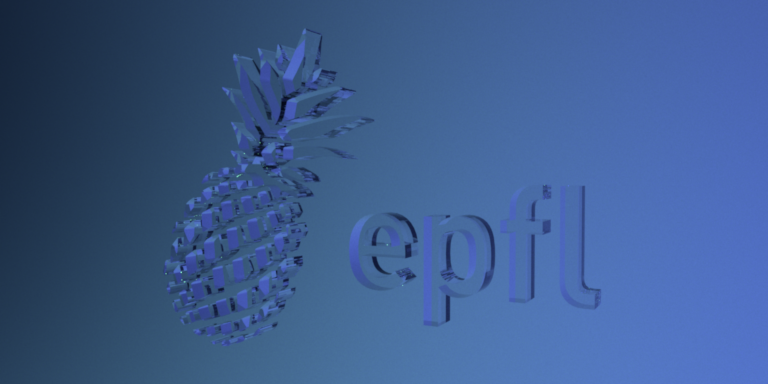
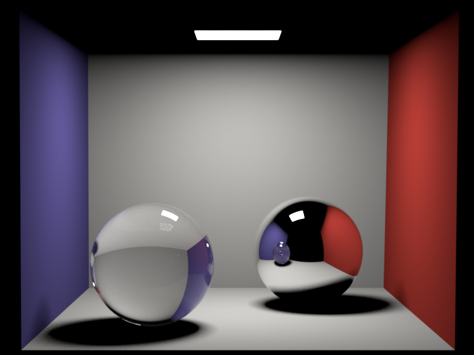
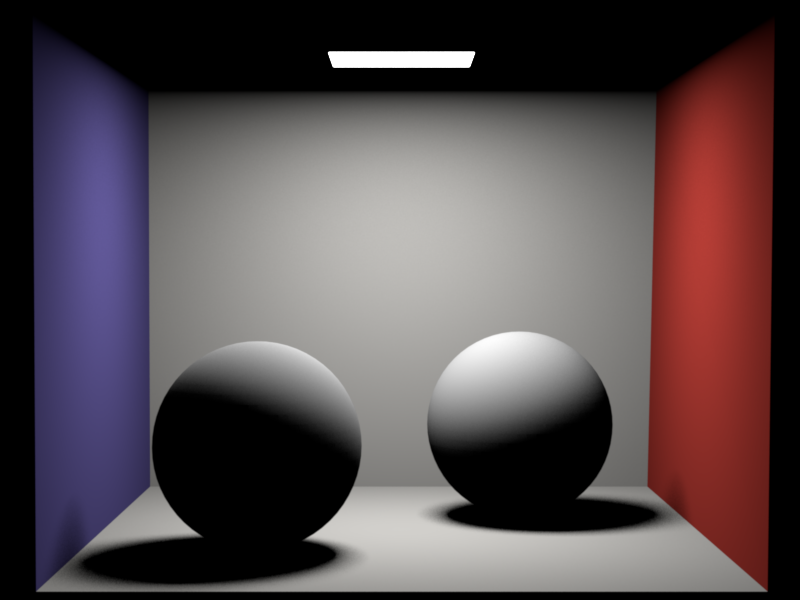
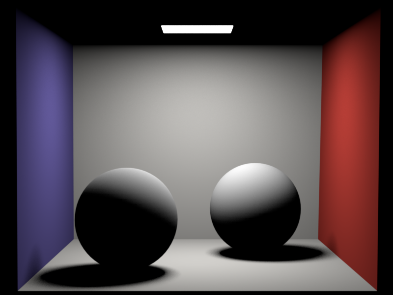

**Homework 4**
Student name: Samuel Laporte
Sciper number: 366873
Area lights (25 pts)
====================
Mesh modifications
In the activate function, all we had to do was to iterate through all the triangles of the mesh
and add the surface area into an instance of a DiscretePDF struct.
I also added the sample method to the mesh. This method take a sample and a reference to a position and a normal.
With the help of the DiscretePDF that we correctly initialized in the activate function, we can get a random triangle index.
With this index we can calculate a random position inside this triangle.
We can also calculate the normal at this position. The calculation depends on if we have a vertex normal array or not.
In the file `mesh.h` I also added a new function `getTotalSurfaceArea` that will be useful for the next part of this homework
Emitter and AreaLight modifications
For the emitter class, I only added 1 virtual functions that will help me for the next part of this homework, The function `Le` calculate
the light emitted by the emitter viewed from a certain angle.
Distribution Ray Tracing (40 pts)
=================================
Design choice
The first thing I did was to create a way to get a random light uniformly. In order to do that, I implemented the preprocess function that get all the emitter of the scene and
put it in an array. Once the array is created, the program iterate through the array and append in a DiscretePDF instance the total surface area of this mesh (this is where the function `getTotalSurfaceArea()` is useful).
The WhittedIntegrator class now need some private attributes (m_lights : std::vector(Mesh*)) and (m_light_pdf : DiscretePDF) that will be used in the calculation of the light in the next function.
The function `Li()` is pretty much the implementation of the formula we were given in the assignment.
Check if the ray hit a surface
Check if the hit position is an emitter
If yes then add the radiance value to the calculated value
If not do nothing
Get a random light and sample a position and a normal
Check if the hit position see the random light
If yes then return the pixel value by applying the formula
If not then return then return a black color
Results
Diffuse logo:

Cornell box (distributed):

Note: please commit both EXR and PNG versions of your renders in the `results/homework-X` folder.
Dielectrics (25 pts)
====================
Sample function
The implementation of the dielectric class is fairly simple object or inside. In the `sample` function, depending on the case, it will swap the refracting index and the normal in order to corret the calculation
After, the function get the Fresnel coefficient `fr` and compare it with a random sample.
If the `fr` value is higher than the sample, the proram will do a reflection of the incoming vector. If not, we enter the refraction case and calculate the outgoing
direction depending on the refracting index.
Whitted-style ray tracing (10 pts)
==================================
To add the whitted-style ray tracing is only a matter of adding an if else statement using `isDiffuse`.
If the mesh is not diffuse then do a russian roulette with 0.95 change of success. If the test succeed, we sample a new ray
based with the help of the sample function of the dielectric class. After that we do a recursive call with the new calculated ray as a parameter.
Dielectric logo:

Cornell box (Whitted):

Note: please commit both EXR and PNG versions of your renders in the `results/homework-X` folder.
Feedback
========
We would appreciate any comments or criticism to improve the projects in future years--naturally, this part will not be graded. Examples of information that is useful to us includes:
* How much time did you spend on the assignment? How was it divided between designing, coding, and testing?
* What advice should we have given you before you started?
* What was hard or surprising about the assignment?
* What did you like or dislike? What else would you change?
 
